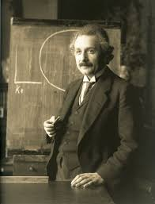
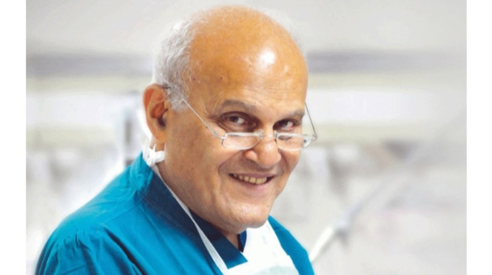

|
 |
Albert Einstein was a German theoretical physicist, born on March 14, 1879, in Ulm, Germany, and passed away on April 18, 1955, in Princeton, New Jersey, USA. He is considered one of the greatest scientists in history, and his discoveries revolutionized our understanding of the universe. He was theoretical physicist, best known for the theory of relativity and his equation E=mc². He was awarded the Nobel Prize in Physics in 1921.
See more
|
|

|
Magdi Yacoub is an Egyptian-British heart surgeon, regarded as one of the world's leading heart surgeons.
He was born on November 16, 1935, in Belbes, Egypt.
He is known for his significant contributions to the field of heart surgery and for developing many advanced surgical techniques that have saved countless lives.
Yacoub was involved in groundbreaking research and developed advanced surgical techniques in heart transplantation, including the use of artificial heart valves and other life-saving innovations in cardiovascular surgery.
See more
|
.jpeg)
|
Nelson Mandela spent 27 years in prison, mostly on Robben Island, before his release in 1990. His imprisonment became a symbol of the struggle for freedom and racial equality,
A political leader and anti-apartheid revolutionary,
Mandela became South Africa's first black president
and was awarded the Nobel Peace Prize in 1993 ,In 1944, he co-founded the ANC Youth League and became increasingly active in campaigns against apartheid.
See more
|